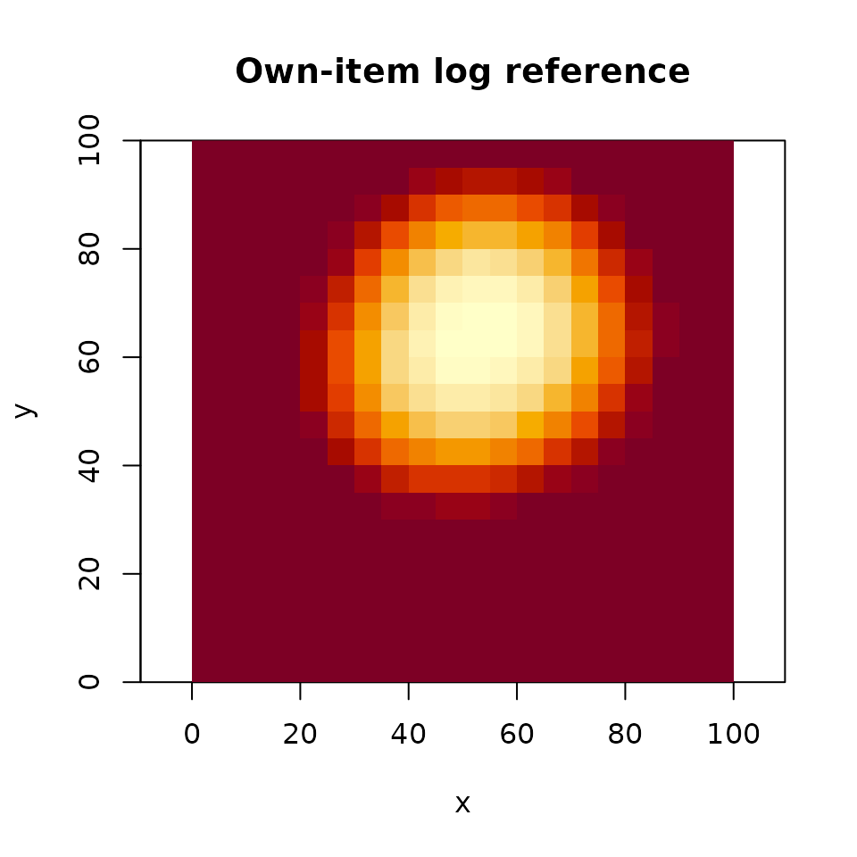
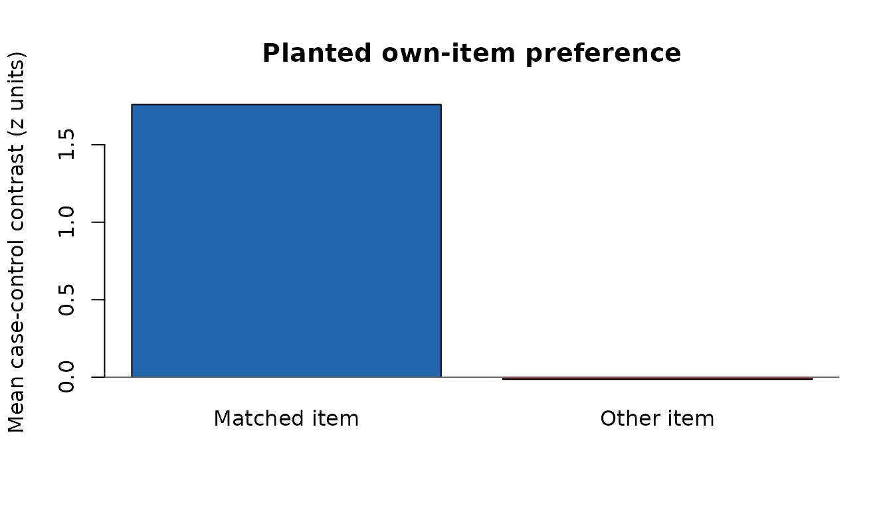

Fixation-level scoring with leave-out references
Source:vignettes/fixation-reference-scoring.Rmd
fixation-reference-scoring.RmdDoes a test fixation land where the person’s study gaze predicts, beyond where that person usually looks? This workflow constructs study references, draws control locations, and scores both. It keeps the control and template assignments so the analysis can be replayed or compared with a different scoring choice. The example uses synthetic data with a planted preference for each person’s study locations.
Prepare study maps and test fixations
We simulate eight people viewing six items. Every person/item pair has its own preferred location. Test fixations return near that location. Coordinates run from 0 to 100; onsets and durations are in milliseconds.
set.seed(53)
study <- expand.grid(subject = paste0("s", 1:8), item = paste0("i", 1:6),
stringsAsFactors = FALSE)
centers <- cbind(runif(nrow(study), 20, 80), runif(nrow(study), 20, 80))
study$fixgroup <- lapply(seq_len(nrow(study)), function(i) {
fixation_group(
x = rnorm(12, centers[i, 1], 5), y = rnorm(12, centers[i, 2], 5),
onset = seq(0, 1100, 100), duration = rep(100, 12)
)
})
test <- do.call(rbind, lapply(seq_len(nrow(study)), function(i) {
data.frame(subject = study$subject[i], item = study$item[i],
trial = study$item[i], epoch = "test",
x = rnorm(6, centers[i, 1], 7),
y = rnorm(6, centers[i, 2], 7), onset = seq(0, 500, 100))
}))
maps <- density_by(
study, groups = c("subject", "item"), sigma = 8,
xbounds = c(2.5, 97.5), ybounds = c(2.5, 97.5), outdim = c(20, 20),
window = c(50, 950), window_weight = "overlap", duration_weighted = TRUE
)These bounds put the grid at the centers of 5-unit cells. Lookup uses the nearest grid point, with half-to-even rounding at ties and clamping at the edges. It does not interpolate between cells. The overlap window clips the first and last retained fixations to 50 milliseconds. The default onset window would instead select fixations by their onset and retain their full durations.
Construct references, assign controls, and score
refs <- reference_maps(maps, floor = 1 / (10 * 20 * 20))
strata <- sample_controls(test, n = 10, draws = 3, stratify_by = "epoch", seed = 7)
scored <- score_strata(strata, refs)
contrasts <- case_control_contrast(scored, by = "trial")
aggregate(contrasts[refs$refs], list(control_draw = contrasts$draw), mean)
#> control_draw self_item self_other_items others_item others_other_items
#> 1 1 1.576836 -0.8474580 -0.07462405 0.01288271
#> 2 2 1.585966 -0.8443119 -0.07317076 0.02254866
#> 3 3 1.588978 -0.8338852 -0.10141726 -0.01824821Each contrast is the case score minus the mean of its control scores. Trial contrasts average fixation contrasts equally. Positive values mean that cases score higher than controls under that reference. Control draws remain separate; averaging across draws is an explicit analysis choice.
The four reference columns answer different questions:
| Reference | Contributors |
|---|---|
self_item |
This person’s study map for this item |
self_other_items |
This person’s study maps for other items |
others_item |
Other people’s study maps for this item |
others_other_items |
Other people’s study maps for other items |
For the last reference, the package first averages other items within
each person, then averages those person means equally. Thus a person
with more available items does not receive greater weight. NULL maps are
missing, not zero-valued maps. refs$counts records
contributing maps for self references and contributing people for other
references. min_n makes undersupported references return
missing scores while preserving their keys.
By default, each source map is normalized to unit sum, transformed
with log(value + floor), and then averaged. The floor is an
explicit additive offset. space = "density" averages
densities instead. These operations produce different references;
scoring never logs a prepared reference again. Use
space = "density", transform = "log" to take the log after
averaging density values. The constructor records both the aggregation
and output domains.
refs$keys[1, ]
#> subject item
#> 1 s1 i1
refs$counts[1, ]
#> self_item self_other_items others_item others_other_items
#> 1 1 5 7 7
own <- reference_map(refs, row = 1, ref = "self_item")
image(own$x, own$y, own$z, xlab = "x", ylab = "y", asp = 1,
main = "Own-item log reference", col = hcl.colors(30, "YlOrRd"))
Inspect and reuse assignments
head(strata[c("subject", "item", "case_id", "control_id", "draw",
"stratum", "is_case", "x", "y")], 4)
#> subject item case_id control_id draw stratum is_case x y
#> 1...1 s1 i1 1 1 1 1 TRUE 54.51360 66.24832
#> 1.1...2 s1 i1 1 100 1 1 FALSE 74.94712 36.29390
#> 1.2...3 s1 i1 1 193 1 1 FALSE 24.69938 33.92677
#> 1.3...4 s1 i1 1 244 1 1 FALSE 31.29766 19.54338For observed controls, control_id identifies the donor
row of test. Other metadata belongs to the case, including
its item and trial. Donors come from the same subject and epoch,
excluding the case’s entire trial and every trial of the case’s item.
Item exclusion matters for repeated presentations: own-item donors can
land on the matched template’s hotspots and attenuate its contrast. The
item column is detected by default; pass
item = "stimulus" for a custom column or
item = NULL for trial-only exclusion. Without an item
column, the default also uses trial-only exclusion. With
replace = "auto", sampling uses replacement only when the
pool is too small. Empty pools produce an error. Seeded constructors
restore the caller’s RNG state; scoring uses no random numbers. Save the
assignment table along with the reference set to replay an analysis.
Uniform controls require explicit bounds. Map controls draw grid
locations independently with replacement according to a supplied
density; requesting replace = FALSE is an error for map
controls. These methods define different comparison distributions. There
is deliberately no control-only jitter: moving controls away from the
center while leaving centered cases unchanged can manufacture a positive
preference even when cases and unperturbed controls coincide.
Separate map preparation from score scaling
score_strata() standardizes each reference column within
subject and control draw, using all case and control rows. This differs
from z-scoring the cells of a density map. The separate fit/apply
interface makes reuse explicit:
raw <- score_strata(strata, refs, standardize = "none")
scaling <- fit_score_scaling(raw, by = c("subject", "draw"))
replayed <- apply_score_scaling(raw, scaling)
stopifnot(identical(replayed, scored))Fitting each control draw separately prevents adding draws from altering earlier draws’ scaling. Constant score columns map to zero. Missing scores stay missing and propagate into contrasts; they are not silently removed from a control pool. Applying a fit to an unseen group produces an error.
Compare matched and mismatched templates on shared controls
assignments <- mismatch_assignments(strata, refs, n = 20, seed = 31)
null <- mismatch_draws(strata, refs, assignments = assignments,
replace_ref = "self_item", by = "trial")
comparison <- data.frame(
assignment = c("Matched item", "Other item"),
mean_contrast = c(mean(null$paired_observed$self_item), mean(null$contrasts$self_item))
)
comparison
#> assignment mean_contrast
#> 1 Matched item 1.75923390
#> 2 Other item -0.01346363Each replacement is another valid study item from the same subject.
One replacement applies to the entire trial, including all its
fixations, controls, and control draws.
replace_ref = "self_item" changes only the own-item
reference; replace_ref = "all" replaces the full reference
tuple coherently. The original case metadata remains attached to the
returned contrasts.
By default, each draw excludes controls whose donor item is either
the case’s item or the replacement item, including donors from repeated
trials of either item. This also corrects older saved assignments drawn
with trial-only exclusion. Own-item donors would attenuate the matched
contrast; replacement-item donors would push the mismatched contrast
below zero under a real matched effect. control_id and the
saved control_sources attribute identify donors even after
selecting a subset of cases. No controls are redrawn; a stratum left
without controls produces an error. Increasing the initial control count
can help only if eligible donors exist. A subject with only two test
items cannot support a comparison between those items using observed
controls, even with repeated trials. In particular, two test trials
containing those items always leave an empty pool. Use
saveRDS() to preserve donor metadata when saving a subset
of cases.
paired_observed rescores the matched template using
exactly the same retained controls and scaling as each mismatched
contrast. The plot compares these paired results. observed
retains the original contrast on all controls for context; if those
controls came from trial-only sampling, repeated own-item donors can
still attenuate observed.
control_policy = "fixed" retains all supplied controls,
including replacement-item donors. Combine it with
sample_controls(..., item = NULL) to reproduce the original
item-discrimination baseline. Its negative value under a real effect
should not be interpreted as an absence-of-reinstatement baseline.

Scaling is refitted on the retained mismatched scores in each draw by
default, and that same fit is applied to both members of the pair. Set
restandardize = FALSE to apply the original observed fit to
both instead. Use standardize = "none" for comparisons in
raw reference units. Neither option alone establishes an exact
randomization test. Item replacement must be justified by the study
design and the null hypothesis; repeated items and condition differences
can violate exchangeability. The function therefore returns draws and
assignments without automatic p-values.
The reference scores are available as predictors for an analysis chosen by the researcher. An own-item contrast can contain generic image-content effects: compare it with the other references before interpreting it as person-specific reinstatement. Conditioning on correlated reference scores requires a model and an interpretation; it is not an automatic decomposition supplied by this API.
Existing entry points
sample_density() still samples one density map with its
previous defaults. It also accepts a named map list or map table, with
long or wide results. template_sample() forwards sampling
options, and sample_density_time() retains its time-series
and averaged-baseline output. These interfaces share map preparation and
lookup with the new workflow. Use explicit strata and mismatch
assignments when the identities of controls and replacement draws must
remain available.